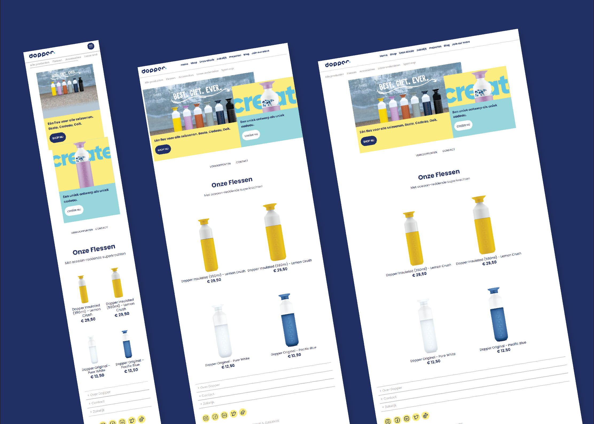
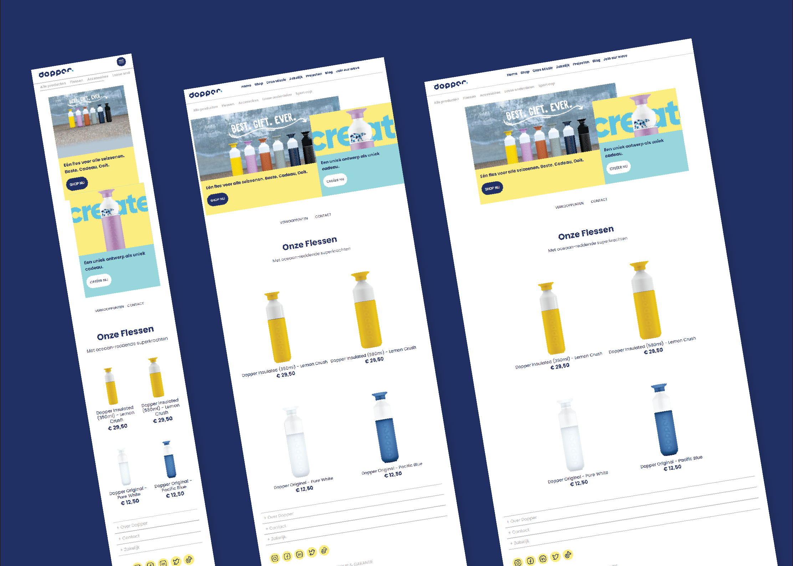
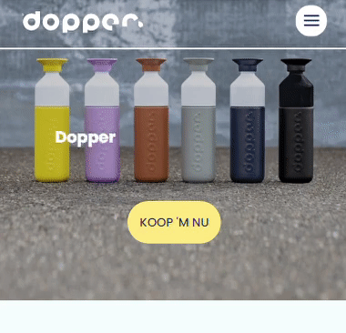
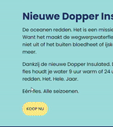
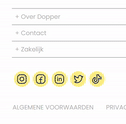

Dopper website design replica
Dopper website from scratch met HTML/CSS/JS

-
skills
html/css, js, animatie, responsiveness
-
periode
december 2021
-
opdrachtgever
HvA CMD
Opdracht
Neem een bestaande website en bouw hier een HTML/CSS(/JS) versie van. Maak de website responsive en/of besteed aandacht aan het visuele design (surface plane). Ik heb voor de website van Dopper gekozen, omdat ik het visueel een mooie en speelse website vind, waarbij veel aandacht is besteed aan de huisstijl en animatie.
 Bekijk GitHub
Bekijk GitHub
 Bekijk de website
Bekijk de website
Responsive Home & Shop pages
Multidevice (Mobile, Tablet en Desktop) home & shop pagina's.
 

Animaties
Animaties maken de pagina levendiger. States van buttons en uitklapmenu's worden visueel weergegeven (hover, active)
- 
- 
- 
Tijdens dit project heb ik mijn voorkennis van HTML/CSS en een beetje JS kunnen toepassen. Ik heb tijdens de opbouw van dit project CSS animaties ontdekt, CSS grid geleerd, heb ik meer CSS properties mogen ontdekken en heb ik geleerd over responsive design.
Animaties zorgen niet alleen voor een betere toegankelijkheid door states te visualiseren, maar geven ook flair aan een huisstijl, bijvoorbeeld hier die van Dopper.
Code
De website bestaat uit approx. 1500 lines CSS, 400 lines HTML en een kleine 60 lines JavaScript.
Proces
Het proces van versie 1 tot 3 (Mobile first). Proces is verder te zien/lezen in de Readme.md op Github.
Next Up
De PixelHobby Designer
Een UX/UI redesign van de Designer software